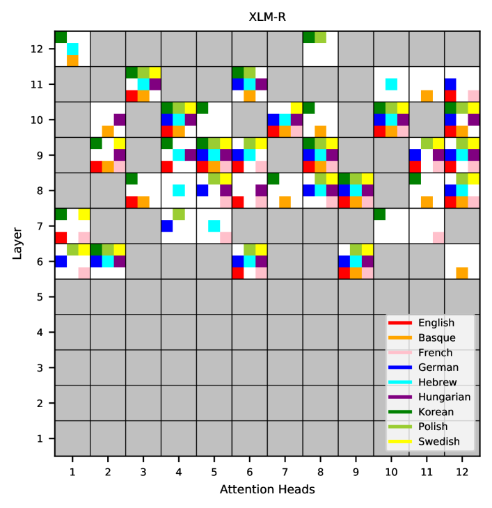

Multilingual Chart-based Constituency Parse Extraction from Pre-trained Language Models
EMNLP 2021 Findings
Taeuk Kim, Bowen Li, Sang-goo Lee
한줄 요약
사전학습 언어 모델에서 차트 기반으로 다국어 구문 구조를 추출하는 방법

Figure 1. 사전학습 언어 모델에서 차트 기반 다국어 구문 구조 추출. 구문 추출 방법을 다국어로 확장합니다.
배경
사전학습 언어 모델에서 구문 분석 트리를 추출하는 기존 연구는 거의 전적으로 영어(주로 Penn Treebank)에 집중되어 있었습니다. 그러나 mBERT, XLM-RoBERTa와 같은 다국어 PLM은 수십 개 언어의 데이터로 학습되므로, 이들이 인코딩하는 구문 구조가 언어별 특성인지 보편적인지에 대한 질문이 제기됩니다. 구문 추출을 다국어 환경으로 확장하는 것은 이 모델들이 학습하는 구조적 지식을 이해하고, 대규모 트리뱅크가 없는 저자원 언어에서의 구문 분석을 가능하게 하는 데 필수적입니다.
방법
차트 기반 추출: 다국어 PLM의 내부 표현을 사용하여 인접 단어 간의 구문적 거리 점수를 계산합니다. 이 거리를 CYK 스타일 차트에 채운 후, 동적 프로그래밍을 통해 최고 점수의 이진 구문 트리를 디코딩합니다.
다국어 PLM 프로빙: 다국어 모델(mBERT, XLM-R)에 적용하고, 영어, 중국어, 독일어, 프랑스어, 일본어 등 유형론적으로 다양한 언어의 트리뱅크에서 평가합니다.
교차 언어 전이 분석: 한 언어에서 추출된 구문 구조가 다른 언어로 전이되는지 조사하고, 단일 레이어나 거리 메트릭이 여러 언어에서 잘 작동하는지 또는 언어별 튜닝이 필요한지 테스트합니다.
결과
다국어 구문 추출의 유효성: 다국어 PLM에서의 차트 기반 추출이 테스트된 모든 언어에서 의미 있는 구문 트리를 생성하여, 이 모델들이 영어를 넘어서 구문 계층 구조를 인코딩함을 확인합니다.
언어에 따른 최적 레이어: 최적 성능 레이어가 언어마다 다르며, 이는 언어의 유형론적 특성에 따라 서로 다른 레이어가 서로 다른 구조적 현상에 특화됨을 시사합니다.
교차 언어 전이 가능성: 한 언어에 최적화된 설정이 관련 언어로 합리적으로 전이되지만, 유형론적으로 먼 언어 쌍에서는 성능이 저하되어, 구조적 인코딩이 부분적으로 보편적이지만 완전히 언어 비의존적이지는 않음을 나타냅니다.
단일 언어 모델과의 비교: 다국어 모델이 영어 데이터에서 단일 언어 영어 모델과 유사한 성능을 보이면서 추가로 다른 언어도 지원하여, 다국어성이 영어 파싱 품질을 크게 희생하지 않음을 보여줍니다.
의의
본 연구는 PLM에서의 구문 분석 추출이 영어만의 현상이 아니라 다국어로 일반화됨을 확립합니다. 이러한 방법의 첫 번째 체계적 다국어 평가를 제공하여, 가능성(교차 언어 구문 구조의 존재)과 한계(최적 구성의 언어 의존성) 모두를 밝힙니다. 트리뱅크가 없는 저자원 언어에서 다국어 PLM만으로 근사적 구문 분석에 이르는 실행 가능한 경로를 제시하며, 향후 다국어 구문 프로빙 연구의 설계에 기여합니다.